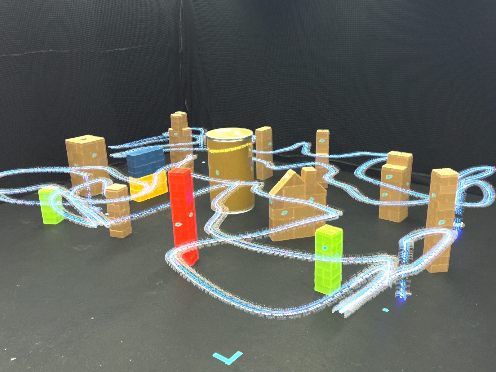

Long-exposure photo of a drone running a safe ergodic search trajectory through a cluttered flight arena.
Overview
Robots used for search and exploration need to cover a space thoroughly and never collide with anything along the way, and guaranteeing both at once is hard in tight, cluttered environments. This work generates search trajectories that are guaranteed to be safe by building discrete control barrier functions (DCBFs) directly into ergodic trajectory optimization.
How it works
- Ergodic trajectory optimization plans continuous exploratory trajectories whose time-averaged behavior matches a target information distribution, so the robot spends more time where there is more to find and is guaranteed to cover the space.
- Discrete control barrier functions encode collision avoidance as constraints that keep the robot inside the safe set at every time step of the plan.
- Combining the two produces trajectories that remain exploratory while being provably collision-free, for single robots and for teams of robots.
Experiments
We validated the approach in simulation and in real-world experiments on single- and multi-drone platforms, showing safe and effective exploration in cluttered environments.
My role
First author. I led the entire project, from developing the safety-critical ergodic control framework and writing the code to running the simulated and real-world drone experiments and writing the paper, with help from my co-author Ethan Dong, then an undergraduate in the lab.
Gallery